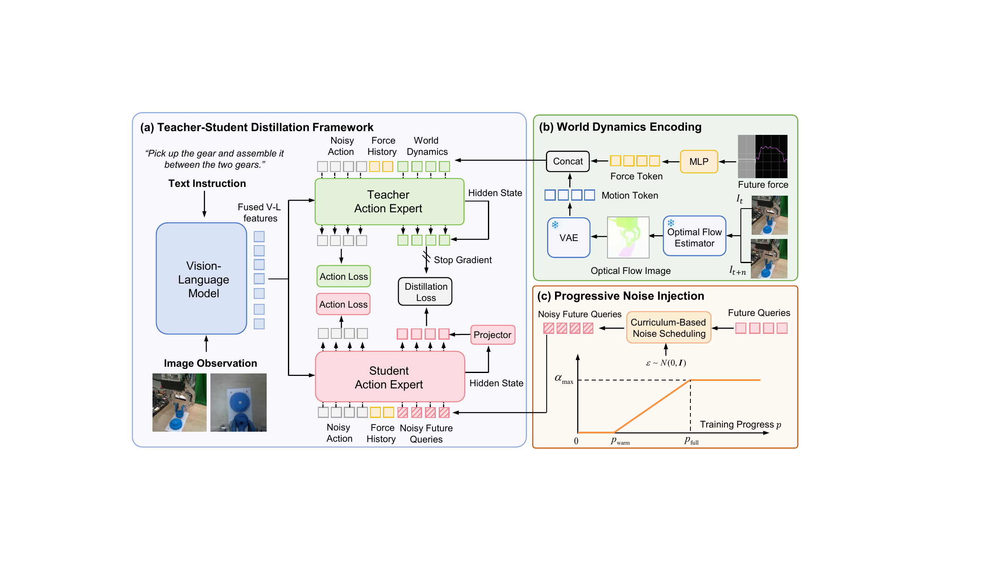
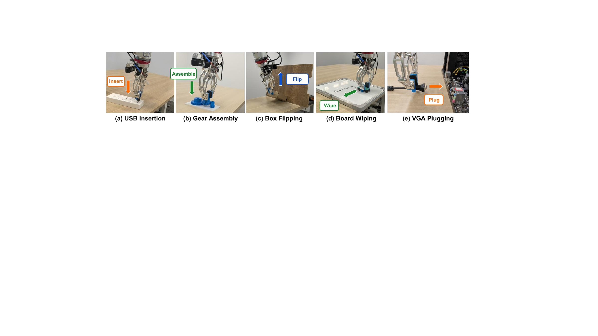
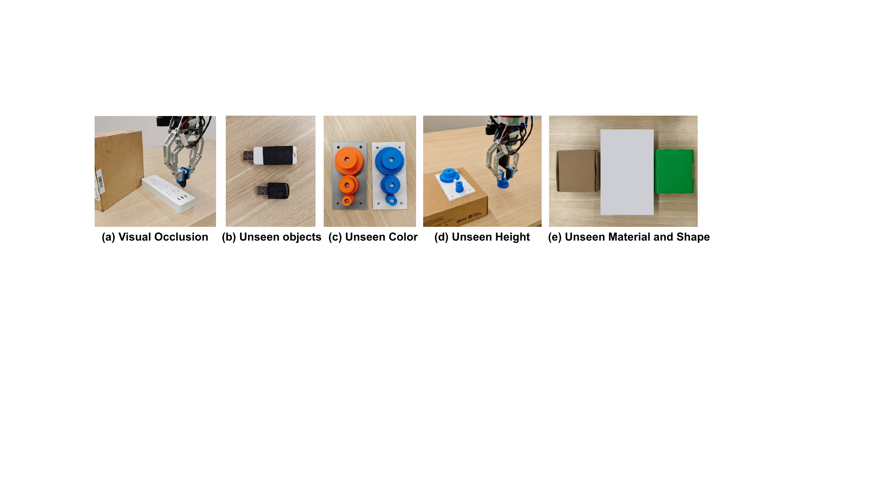

Physical foresight without pixel-space future prediction.
1 School of Computer Science and Technology, Xi'an Jiaotong University
2 School of Computer Science and Technology, University of Science and Technology of China
3 Synkrotron, Inc.
* Equal contribution. † Corresponding authors.
World-action models improve robotic manipulation by predicting future scene evolution to guide policy learning. However, existing approaches typically model such evolution through pixel-space video prediction, which entangles task-relevant dynamics with irrelevant lighting and texture. Moreover, visual prediction struggles to capture future contact information, thereby limiting its applicability to contact-rich tasks. Our key insight is that future force and motion provide a more physically grounded representation of interaction dynamics, yielding more informative cues for action prediction in contact-rich manipulation.
However, directly predicting raw force and motion signals is both difficult and unnecessary, as it requires precise reconstruction of noisy, task-irrelevant details. To address this issue, we propose Force-and-Motion Distillation (FoMoD), a framework that distills future contact and motion dynamics into the policy. FoMoD adopts a teacher-student distillation framework, in which privileged teachers extract compact, action-relevant representations from future sensor signals and distill them into a student model. This design not only makes future dynamics easier to predict but also encourages the model to focus on control-relevant information rather than on irrelevant details.
To further improve robustness and generalization, we introduce a curriculum-based strategy that progressively injects noise into future queries, thereby reducing the model's reliance on future information. We evaluate FoMoD on five real-world contact-rich manipulation tasks. Experiments show that FoMoD achieves state-of-the-art performance, consistently improves task success rates, and generalizes effectively to novel environments.
Distill physical foresight without predicting pixels
FoMoD transfers compact future force and motion representations from privileged teachers to a deployable student.
FoMoD uses future force/torque and optical flow as privileged supervision rather than explicit prediction targets. Online future-dynamics distillation transfers their action-relevant latent representations to a student, while progressive query perturbation improves robustness. At inference time, the teachers and all future signals are discarded.

Figure 2. Overview of our proposed FoMoD. It consists of (a) a teacher-student distillation framework that transfers future-aware dynamics representations to the student policy, (b) a future dynamics encoder that converts future force and optical flow into force and motion tokens, and (c) progressive noise injection that adds scheduled noise to the student's latent queries to improve generalization.
Future 6D wrench measurements provide direct supervision for contact onset, resistance, sliding, and force buildup.
Optical flow captures robot and object motion without forcing the model to reconstruct redundant RGB details.
Student latent queries are aligned with teacher dynamics representations, enabling future-aware reasoning from causal inputs.
A curriculum gradually perturbs student queries, preventing shortcut dependence on privileged teacher features.
Teacher-free and future-free. Only the student branch and current observations are retained at deployment.
We evaluate on a 7-DoF xArm7 manipulator with a wrist-mounted 6D force/torque sensor, a wrist camera, and a fixed external camera. The benchmark covers precise insertion, rigid-body assembly, object reorientation, and sustained surface contact.

Figure 3. Five real-world contact-rich manipulation tasks used in our experiments.
Contact-rich rollouts across five tasks
In-distribution successes, unseen conditions, perturbations, and representative failures. Videos load only as they approach the viewport for a faster page.
Best overall performance across five real-world contact-rich tasks.
Improves over the strongest OOD baseline by 20.0 percentage points.
Large gains on high-precision insertion requiring fine force-aware correction.
| Model | USB | Gear | Box | Wiping | VGA | Avg. |
|---|---|---|---|---|---|---|
| pi0 w/o force | 44.0 | 46.7 | 55.0 | 60.0 | 0.0 | 41.1 |
| pi0 w/ force | 64.0 | 83.3 | 70.0 | 70.0 | 5.0 | 58.5 |
| TA-VLA | 80.0 | 93.3 | 80.0 | 75.0 | 10.0 | 67.7 |
| ForceVLA | 52.0 | 66.7 | 65.0 | 65.0 | 5.0 | 50.7 |
| Seer w/ Force | 76.0 | 70.0 | 95.0 | 70.0 | 50.0 | 72.2 |
| FoMoD | 92.0 | 83.3 | 95.0 | 80.0 | 85.0 | 87.1 |

Figure 4. Out-of-distribution generalization settings used in our real-world evaluation.
| Model | USB Obj. | USB Occ. | Gear Height | Gear Color | Box Mat. | Box Shape | Avg. |
|---|---|---|---|---|---|---|---|
| pi0 w/o force | 20.0 | 26.7 | 0.0 | 40.0 | 26.7 | 0.0 | 18.9 |
| pi0 w/ force | 40.0 | 73.3 | 0.0 | 46.7 | 26.7 | 33.3 | 36.7 |
| TA-VLA | 20.0 | 66.7 | 13.3 | 66.7 | 13.3 | 26.7 | 34.5 |
| ForceVLA | 26.7 | 20.0 | 0.0 | 40.0 | 0.0 | 16.7 | 17.2 |
| Seer w/ Force | 46.7 | 20.0 | 53.3 | 60.0 | 73.3 | 40.0 | 48.9 |
| FoMoD | 86.7 | 86.7 | 46.7 | 60.0 | 80.0 | 53.3 | 68.9 |
@misc{tang2026fomod,
title = {FoMoD: Future Force-and-Motion Distillation Improves Contact-Rich Manipulation},
author = {Tang, Peiyuan and Li, Yao and Zhang, Xiaodong and Zhang, Wuyang and Xia, Qin and Zhang, Yanyong and Yang, Zijiang James},
year = {2026}
}